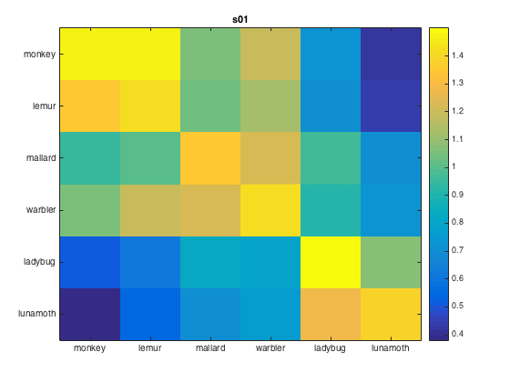
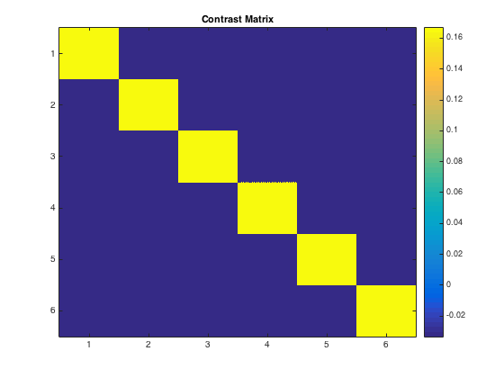
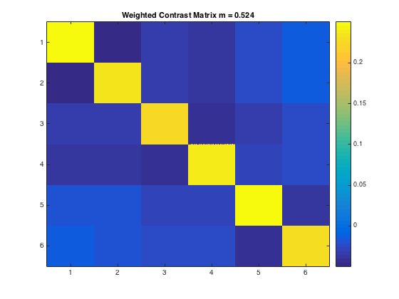

Roi-based MVPA for single subject (run_split_half_correlations_single_sub)
Load t-stat data from one subject, apply 'vt' mask, compute difference of (fisher-transformed) between on- and off diagonal split-half correlation values.
- For CoSMoMVPA's copyright information and license terms, #
- see the COPYING file distributed with CoSMoMVPA. #
Contents
Set analysis parameters
subject_id='s01'; roi_label='vt'; % 'vt' or 'ev' or 'brain' config=cosmo_config(); study_path=fullfile(config.tutorial_data_path,'ak6');
Computations
data_path=fullfile(study_path, subject_id); % file locations for both halves half1_fn=fullfile(data_path,'glm_T_stats_odd.nii'); half2_fn=fullfile(data_path,'glm_T_stats_even.nii'); mask_fn=fullfile(data_path,[roi_label '_mask.nii']); % load two halves as CoSMoMVPA dataset structs. half1_ds=cosmo_fmri_dataset(half1_fn,'mask',mask_fn,... 'targets',(1:6)',... 'chunks',repmat(1,6,1)); half2_ds=cosmo_fmri_dataset(half2_fn,'mask',mask_fn,... 'targets',(1:6)',... 'chunks',repmat(2,6,1)); labels={'monkey'; 'lemur'; 'mallard'; 'warbler'; 'ladybug'; 'lunamoth'}; half1_ds.sa.labels = labels; half2_ds.sa.labels = labels; cosmo_check_dataset(half1_ds); cosmo_check_dataset(half2_ds); % Some sanity checks to ensure that the data has matching features (voxels) % and matching targets (conditions) assert(isequal(half1_ds.fa,half2_ds.fa)); assert(isequal(half1_ds.sa.targets,half2_ds.sa.targets)); nClasses = numel(half1_ds.sa.labels); % get the sample data % each half has six samples: % monkey, lemur, mallard, warbler, ladybug, lunamoth. half1_samples=half1_ds.samples; half2_samples=half2_ds.samples; % compute all correlation values between the two halves, resulting % in a 6x6 matrix. Store this matrix in a variable 'rho'. % Hint: use cosmo_corr (or builtin corr, if the matlab stats toolbox % is available) after transposing the samples in the two halves. % >@@> rho=cosmo_corr(half1_samples',half2_samples'); % <@@< % Correlations are limited between -1 and +1, thus they cannot be normally % distributed. To make these correlations more 'normal', apply a Fisher % transformation and store this in a variable 'z' % (hint: use atanh). % >@@> z=atanh(rho); % <@@< % visualize the normalized correlation matrix figure % >@@> imagesc(z); colorbar() set(gca, 'xtick', 1:numel(half1_ds.sa.labels), ... 'xticklabel', half1_ds.sa.labels) set(gca, 'ytick', 1:numel(half1_ds.sa.labels), ... 'yticklabel', half1_ds.sa.labels) title(subject_id) % <@@< % Set up a contrast matrix to test whether the element in the diagonal % (i.e. a within category correlation) is higher than the average of all % other elements in the same row (i.e. the average between-category % correlations). For testing the split half correlation of n classes one % has an n x n matrix (here, n=6). % % To compute the difference between the average of the on-diagonal and the % average of the off-diagonal elements, consider that there are % n on-diagonal elements and n*(n-1) off-diagonal elements. % Therefore, set % - the on-diagonal elements to 1/n [positive] % - the off-diagonal elements to -1/(n*(n-1)) [negative] % This results in a contrast matrix with weights for each element in % the correlation matrix, with positive and equal values on the diagonal, % negative and equal values off the diagonal, and a mean value of zero. % % Under the null hypothesis one would expect no difference between the % average on the on- and off-diagonal, hence correlations weighted by the % contrast matrix has an expected mean of zero. A postive value for % the weighted correlations would indicate more similar patterns for % patterns in the same condition (across the two halves) than in different % conditions. % Set the contrast matrix as described above and assign it to a variable % named 'contrast_matrix' % >@@> contrast_matrix=(eye(nClasses)-1/nClasses)/(nClasses-1); % alternative solution contrast_matrix_alt=zeros(nClasses,nClasses); for k=1:nClasses for j=1:nClasses if k==j value=1/nClasses; else value=-1/(nClasses*(nClasses-1)); end contrast_matrix_alt(k,j)=value; end end % <@@< % sanity check: ensure the matrix has a sum of zero if abs(sum(contrast_matrix(:)))>1e-14 error('illegal contrast matrix: it must have a sum of zero'); end %visualize the contrast matrix % >@@> figure imagesc(contrast_matrix) colorbar title('Contrast Matrix') % <@@< % Weigh the values in the matrix 'z' by those in the contrast_matrix % and then average them (hint: use the '.*' operator for element-wise % multiplication). % Store the result in a variable 'weighted_z'. % >@@> weighted_z=z .* contrast_matrix; % <@@< % Compute the sum of all values in 'weighted_z', and store the result in % 'sum_weighted_z'. % >@@> sum_weighted_z=sum(weighted_z(:)); %Expected value under H0 is 0 % <@@< %visualize weighted normalized correlation matrix figure imagesc(weighted_z) colorbar % For the advanced exercise title(sprintf('Weighted Contrast Matrix m = %5.3f', sum_weighted_z))  